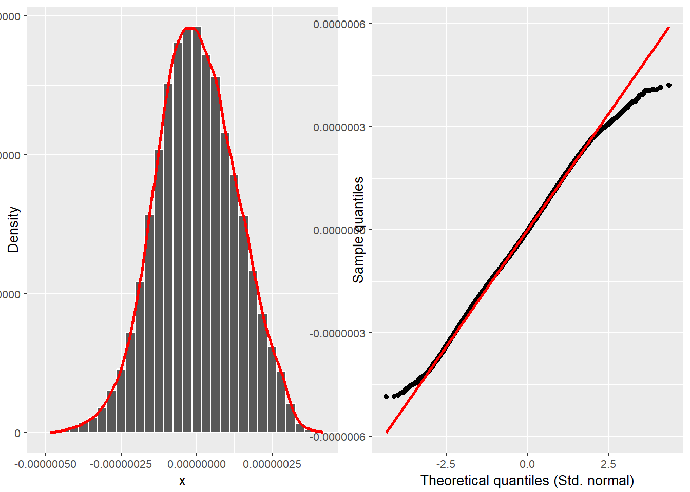
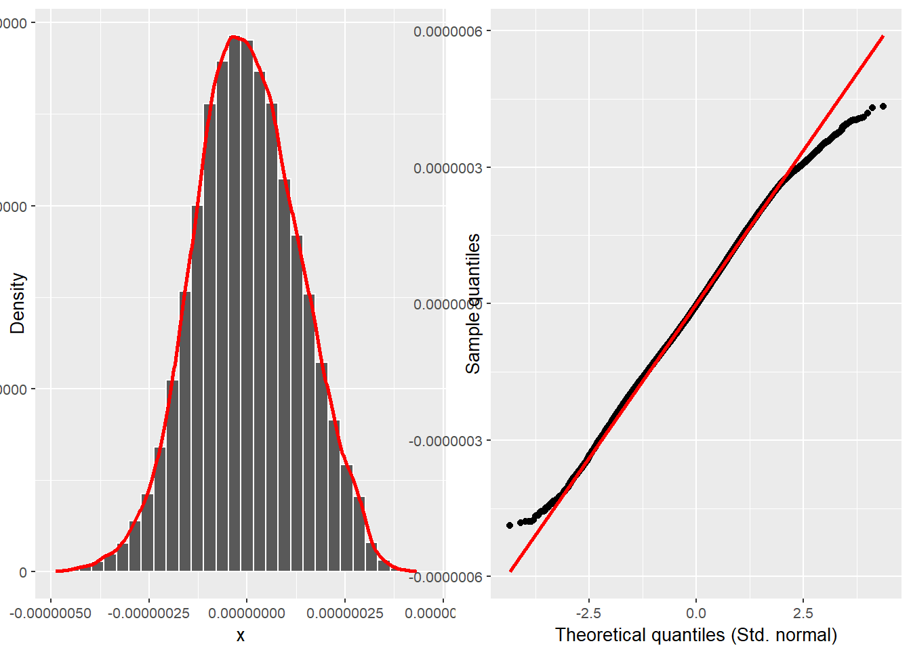

The study hypothesis was tested using nested models of multiple linear regressions. The main idea of nested models is to verify the effect of the inclusion of one or more predictors in the model variance explanation (i.e., the \(\text{R}^{2}\)) (Allen, 1997). This can be made by creating a restricted model and then comparing it with a full model. Hence, the hypothesis can be schematized as follows.
It’s important to note that, in addition to the F-test, it’s assumed that for \(\text{R}^{2}_{\text{res}}\) to differ significantly from \(\text{R}^{2}_{\text{full}}\), there must be a non-negligible effect size between them. This effect size can be calculated using Cohen’s \(f^{2}\)(Cohen, 1988, 1992):
“[…] A problem of this type is called a problem of multiple linear regression because we are considering the regression of \(Y\) on \(k\) variables \(X_{1}, \dots, X_{k}\), rather than on just a single variable \(X\), and we are assuming also that this regression is a linear function of the parameters \(\beta_{0}, \dots, \beta_{k}\). In a problem of multiple linear regressions, we obtain \(n\) vectors of observations (\(x_{i1}. \dots, x_{ik}, Y_{i}\)), for \(i = 1, \dots, n\). Here \(x_{ij}\) is the observed value of the variable \(X_{j}\) for the \(i\)th observation. The \(E(Y)\) is given by the relation
For \(i = 1, \dots, n\), the observed values of \(\hat{y} = \hat{\beta}_{0} + \hat{\beta}_{1} x_{i}\) are called fitted values. For \(i = 1, \dots, n\), the observed values of \(e_{i} = y_{i} - \hat{y}_{i}\) are called residuals(DeGroot & Schervish, 2012, p. 717).
“[…] regression problems in which the observations \(Y_{i}, \dots, Y_{n}\) […] we shall assume that each observation \(Y_{i}\) has a normal distribution, that the observations \(Y_{1}, \dots, Y_{n}\) are independent, and that the observations \(Y_{1}, \dots, Y_{n}\) have the same variance \(\sigma^{2}\). Instead of a single predictor being associated with each \(Y_{i}\), we assume that a \(p\)-dimensional vector \(z_{i} = (z_{i0}, \dots, z_{ip - 1})\) is associated with each \(Y_{i}\)” (DeGroot & Schervish, 2012, p. 736).
General Linear Model
The statistical model in which the observations \(Y_{1}, \dots, Y_{n}\) satisfy the following assumptions (DeGroot & Schervish, 2012, p. 738).
A.3.2 Assumptions
Assumption 1
Predictor is known. Either the vectors \(z_{1}, \dots , z_{n}\) are known ahead of time, or they are the observed values of random vectors \(Z_{1}, \dots , Z_{n}\) on whose values we condition before computing the joint distribution of (\(Y_{1}, \dots , Y_{n}\)) (DeGroot & Schervish, 2012, p. 736).
Normality. For \(i = 1, \dots, n\), the conditional distribution of \(Y_{i}\) given the vectors \(z_{1}, \dots , z_{n}\) is a normal distribution (DeGroot & Schervish, 2012, p. 737).
As it will be seen in the next topics, without any transformation, the chronotype variable does not have a normal distribution. However, this can be satisfied with a Box-Cox transformation (see Box & Cox (1964)).
A residual diagnostics will test the assumption of normality of the error term distribution.
Assumption 3
Linear mean. There is a vector of parameters \(\beta = (\beta_{0}, \dots, \beta_{p - 1})\) such that the conditional mean of \(Y_{i}\) given the values \(z_{1}, \dots , z_{n}\) has the form
Common variance. There is as parameter \(\sigma^{2}\) such the conditional variance of \(Y_{i}\) given the values \(z_{1}, \dots , z_{n}\) is \(\sigma^{2}\) for \(i = 1, \dots\, n\).
The presence of unequal variances (heteroscedasticity) will be tested with a residual diagnostics.
Assumption 5
Independence. The random variables \(Y_{1}, \dots , Y_{n}\) are independent given the observed \(z_{1}, \dots , z_{n}\)(DeGroot & Schervish, 2012, p. 737).
source(here::here("R/utils.R"))utc_minus_3_states <-c("Amapá", "Pará", "Maranhão", "Tocantins", "Piauí", "Ceará","Rio Grande do Norte", "Paraíba", "Pernambuco", "Alagoas", "Sergipe","Bahia", "Distrito Federal", "Goiás", "Minas Gerais", "Espírito Santo","Rio de Janeiro", "São Paulo", "Paraná", "Santa Catarina","Rio Grande do Sul")data <- targets::tar_make(script ="../_targets.R")#> > dispatched target raw_data#> ℹ Downloading raw data✔ Downloading raw data [4s]#> ℹ Decrypting dataUnlocked file written at#> 'C:/Users/Daniel/AppData/Local/Temp/RtmpgXj884/raw-data.zip'.#> ✔ Decrypting data [226ms]#> ℹ Unziping dataLocked file written at#> 'C:/Users/Daniel/AppData/Local/Temp/RtmpgXj884/raw-data.zip.lockr'.#> ✔ Unziping data [1.2s]#> ℹ Reading dataLocked file written at#> 'C:/Users/Daniel/AppData/Local/Temp/RtmpgXj884/dir3e2840bda42/mctq_20170501.csv.lockr'.#> ✔ Reading data [16.1s]#> ℹ Reading dataLocked file written at#> 'C:/Users/Daniel/AppData/Local/Temp/RtmpgXj884/dir3e2840bda42/mctq_20180403.csv.lockr'.#> ✔ Reading data [154ms]#> o completed target raw_data [25.69 seconds, 12.516 megabytes]#> > dispatched target tidy_data#> ℹ Tidying dataUnlocked file written at#> 'C:/Users/Daniel/AppData/Local/Temp/RtmpgXj884/lookup.rda'.#> Locked file written at#> 'C:/Users/Daniel/AppData/Local/Temp/RtmpgXj884/lookup.rda.lockr'.#> ✔ Tidying data [11s]#> o completed target tidy_data [11.03 seconds, 6.966 megabytes]#> ℹ Validating data✔ Validating data [1m 45.9s]#> > dispatched target validated_data#> o completed target validated_data [1.766 minutes, 6.848 megabytes]#> ℹ Analyzing data✔ Analyzing data [2m 30.6s]#> > dispatched target analyzed_data#> o completed target analyzed_data [2.512 minutes, 10.311 megabytes]#> > dispatched target filtered_data#> ℹ Filtering data✔ Filtering data [324ms]#> o completed target filtered_data [0.39 seconds, 7.845 megabytes]#> ℹ Adding geocode data✔ Adding geocode data [238ms]#> > dispatched target geocoded_data#> o completed target geocoded_data [0.35 seconds, 8.04 megabytes]#> > ended pipeline [5.21 minutes]data <- targets::tar_read("geocoded_data", store = here::here("_targets")) |> dplyr::filter(state %in% utc_minus_3_states) |> dplyr::select(msf_sc, age, sex, state, latitude, longitude) |> tidyr::drop_na(msf_sc, age, sex, latitude) |> dplyr::mutate(msf_sc =transform_time(msf_sc))
A.3.5 Round-off errors
R’s hms class store time by the number of seconds since 00:00:00. R’s POSIXct class store time as the number of seconds since the UNIX epoch. Those numeric values are used when creating the models.
The R programming language only stores values up to 53 binary bits, that’s about 15.95459 digits of precision (\(x = 53 \log_{10}(2)\)). Since MCTQ deals with self-reported local time of day (e.g., 02:30) and duration (e.g., 15 minutes), a greater floating-point precision is unnecessary. Even with multiple computations, round-off errors wouldn’t significantly impact the phenomenon under study.
However, this can become a problem when dealing with some transformations. The Rmpfr R package is used in those cases, forcing a floating-point precision of 128 binary bits. That gives about 38.53184 (\(x = 128 \log_{10}(2)\)) decimal digits of precision.
Table A.4: Statistics about the restricted model residuals.
It is important to note that the Kolmogorov-Smirnov and Pearson chi-square test are here just for reference since many authors don’t recommend using them when testing for normality (D’Agostino & Belanger, 1990).
source(here::here("R/test_normality.R"))# res_model |> olsrr::ols_plot_resid_qq()res_model|>stats::residuals()|>test_normality()#> Warning in grid.Call(C_textBounds, as.graphicsAnnot(x$label), x$x, x$y, :#> font width unknown for character 0x2d in encoding cp1252#> Warning in grid.Call(C_textBounds, as.graphicsAnnot(x$label), x$x, x$y, :#> font width unknown for character 0x30 in encoding cp1252#> Warning in grid.Call(C_textBounds, as.graphicsAnnot(x$label), x$x, x$y, :#> font width unknown for character 0x2e in encoding cp1252#> Warning in grid.Call(C_textBounds, as.graphicsAnnot(x$label), x$x, x$y, :#> font width unknown for character 0x30 in encoding cp1252#> Warning in grid.Call(C_textBounds, as.graphicsAnnot(x$label), x$x, x$y, :#> font width unknown for character 0x30 in encoding cp1252#> Warning in grid.Call(C_textBounds, as.graphicsAnnot(x$label), x$x, x$y, :#> font width unknown for character 0x30 in encoding cp1252#> Warning in grid.Call(C_textBounds, as.graphicsAnnot(x$label), x$x, x$y, :#> font width unknown for character 0x30 in encoding cp1252#> Warning in grid.Call(C_textBounds, as.graphicsAnnot(x$label), x$x, x$y, :#> font width unknown for character 0x30 in encoding cp1252#> Warning in grid.Call(C_textBounds, as.graphicsAnnot(x$label), x$x, x$y, :#> font width unknown for character 0x30 in encoding cp1252#> Warning in grid.Call(C_textBounds, as.graphicsAnnot(x$label), x$x, x$y, :#> font width unknown for character 0x35 in encoding cp1252#> Warning in grid.Call(C_textBounds, as.graphicsAnnot(x$label), x$x, x$y, :#> font width unknown for character 0x30 in encoding cp1252#> Warning in grid.Call(C_textBounds, as.graphicsAnnot(x$label), x$x, x$y, :#> font metrics unknown for character 0x4d in encoding cp1252#> Warning in grid.Call(C_textBounds, as.graphicsAnnot(x$label), x$x, x$y, :#> font width unknown for character 0x2d in encoding cp1252#> Warning in grid.Call(C_textBounds, as.graphicsAnnot(x$label), x$x, x$y, :#> font width unknown for character 0x30 in encoding cp1252#> Warning in grid.Call(C_textBounds, as.graphicsAnnot(x$label), x$x, x$y, :#> font width unknown for character 0x2e in encoding cp1252#> Warning in grid.Call(C_textBounds, as.graphicsAnnot(x$label), x$x, x$y, :#> font width unknown for character 0x30 in encoding cp1252#> Warning in grid.Call(C_textBounds, as.graphicsAnnot(x$label), x$x, x$y, :#> font width unknown for character 0x30 in encoding cp1252#> Warning in grid.Call(C_textBounds, as.graphicsAnnot(x$label), x$x, x$y, :#> font width unknown for character 0x30 in encoding cp1252#> Warning in grid.Call(C_textBounds, as.graphicsAnnot(x$label), x$x, x$y, :#> font width unknown for character 0x30 in encoding cp1252#> Warning in grid.Call(C_textBounds, as.graphicsAnnot(x$label), x$x, x$y, :#> font width unknown for character 0x30 in encoding cp1252#> Warning in grid.Call(C_textBounds, as.graphicsAnnot(x$label), x$x, x$y, :#> font width unknown for character 0x30 in encoding cp1252#> Warning in grid.Call(C_textBounds, as.graphicsAnnot(x$label), x$x, x$y, :#> font width unknown for character 0x32 in encoding cp1252#> Warning in grid.Call(C_textBounds, as.graphicsAnnot(x$label), x$x, x$y, :#> font width unknown for character 0x35 in encoding cp1252#> Warning in grid.Call(C_textBounds, as.graphicsAnnot(x$label), x$x, x$y, :#> font width unknown for character 0x30 in encoding cp1252#> Warning in grid.Call(C_textBounds, as.graphicsAnnot(x$label), x$x, x$y, :#> font width unknown for character 0x2e in encoding cp1252#> Warning in grid.Call(C_textBounds, as.graphicsAnnot(x$label), x$x, x$y, :#> font width unknown for character 0x30 in encoding cp1252#> Warning in grid.Call(C_textBounds, as.graphicsAnnot(x$label), x$x, x$y, :#> font width unknown for character 0x30 in encoding cp1252#> Warning in grid.Call(C_textBounds, as.graphicsAnnot(x$label), x$x, x$y, :#> font width unknown for character 0x30 in encoding cp1252#> Warning in grid.Call(C_textBounds, as.graphicsAnnot(x$label), x$x, x$y, :#> font width unknown for character 0x30 in encoding cp1252#> Warning in grid.Call(C_textBounds, as.graphicsAnnot(x$label), x$x, x$y, :#> font width unknown for character 0x30 in encoding cp1252#> Warning in grid.Call(C_textBounds, as.graphicsAnnot(x$label), x$x, x$y, :#> font width unknown for character 0x30 in encoding cp1252#> Warning in grid.Call(C_textBounds, as.graphicsAnnot(x$label), x$x, x$y, :#> font width unknown for character 0x30 in encoding cp1252#> Warning in grid.Call(C_textBounds, as.graphicsAnnot(x$label), x$x, x$y, :#> font width unknown for character 0x30 in encoding cp1252#> Warning in grid.Call(C_textBounds, as.graphicsAnnot(x$label), x$x, x$y, :#> font width unknown for character 0x30 in encoding cp1252#> Warning in grid.Call(C_textBounds, as.graphicsAnnot(x$label), x$x, x$y, :#> font width unknown for character 0x2e in encoding cp1252#> Warning in grid.Call(C_textBounds, as.graphicsAnnot(x$label), x$x, x$y, :#> font width unknown for character 0x30 in encoding cp1252#> Warning in grid.Call(C_textBounds, as.graphicsAnnot(x$label), x$x, x$y, :#> font width unknown for character 0x30 in encoding cp1252#> Warning in grid.Call(C_textBounds, as.graphicsAnnot(x$label), x$x, x$y, :#> font width unknown for character 0x30 in encoding cp1252#> Warning in grid.Call(C_textBounds, as.graphicsAnnot(x$label), x$x, x$y, :#> font width unknown for character 0x30 in encoding cp1252#> Warning in grid.Call(C_textBounds, as.graphicsAnnot(x$label), x$x, x$y, :#> font width unknown for character 0x30 in encoding cp1252#> Warning in grid.Call(C_textBounds, as.graphicsAnnot(x$label), x$x, x$y, :#> font width unknown for character 0x30 in encoding cp1252#> Warning in grid.Call(C_textBounds, as.graphicsAnnot(x$label), x$x, x$y, :#> font width unknown for character 0x32 in encoding cp1252#> Warning in grid.Call(C_textBounds, as.graphicsAnnot(x$label), x$x, x$y, :#> font width unknown for character 0x35 in encoding cp1252#> Warning in grid.Call(C_textBounds, as.graphicsAnnot(x$label), x$x, x$y, :#> font width unknown for character 0x30 in encoding cp1252#> Warning in grid.Call(C_textBounds, as.graphicsAnnot(x$label), x$x, x$y, :#> font width unknown for character 0x31 in encoding cp1252#> Warning in grid.Call(C_textBounds, as.graphicsAnnot(x$label), x$x, x$y, :#> font width unknown for character 0x30 in encoding cp1252#> Warning in grid.Call(C_textBounds, as.graphicsAnnot(x$label), x$x, x$y, :#> font width unknown for character 0x30 in encoding cp1252#> Warning in grid.Call(C_textBounds, as.graphicsAnnot(x$label), x$x, x$y, :#> font width unknown for character 0x30 in encoding cp1252#> Warning in grid.Call(C_textBounds, as.graphicsAnnot(x$label), x$x, x$y, :#> font width unknown for character 0x30 in encoding cp1252#> Warning in grid.Call(C_textBounds, as.graphicsAnnot(x$label), x$x, x$y, :#> font width unknown for character 0x30 in encoding cp1252#> Warning in grid.Call(C_textBounds, as.graphicsAnnot(x$label), x$x, x$y, :#> font width unknown for character 0x30 in encoding cp1252#> Warning in grid.Call(C_textBounds, as.graphicsAnnot(x$label), x$x, x$y, :#> font width unknown for character 0x32 in encoding cp1252#> Warning in grid.Call(C_textBounds, as.graphicsAnnot(x$label), x$x, x$y, :#> font width unknown for character 0x30 in encoding cp1252#> Warning in grid.Call(C_textBounds, as.graphicsAnnot(x$label), x$x, x$y, :#> font width unknown for character 0x30 in encoding cp1252#> Warning in grid.Call(C_textBounds, as.graphicsAnnot(x$label), x$x, x$y, :#> font width unknown for character 0x30 in encoding cp1252#> Warning in grid.Call(C_textBounds, as.graphicsAnnot(x$label), x$x, x$y, :#> font width unknown for character 0x30 in encoding cp1252#> Warning in grid.Call(C_textBounds, as.graphicsAnnot(x$label), x$x, x$y, :#> font width unknown for character 0x30 in encoding cp1252#> Warning in grid.Call(C_textBounds, as.graphicsAnnot(x$label), x$x, x$y, :#> font width unknown for character 0x30 in encoding cp1252#> Warning in grid.Call(C_textBounds, as.graphicsAnnot(x$label), x$x, x$y, :#> font width unknown for character 0x33 in encoding cp1252#> Warning in grid.Call(C_textBounds, as.graphicsAnnot(x$label), x$x, x$y, :#> font width unknown for character 0x30 in encoding cp1252#> Warning in grid.Call(C_textBounds, as.graphicsAnnot(x$label), x$x, x$y, :#> font width unknown for character 0x30 in encoding cp1252#> Warning in grid.Call(C_textBounds, as.graphicsAnnot(x$label), x$x, x$y, :#> font width unknown for character 0x30 in encoding cp1252#> Warning in grid.Call(C_textBounds, as.graphicsAnnot(x$label), x$x, x$y, :#> font width unknown for character 0x30 in encoding cp1252#> Warning in grid.Call(C_textBounds, as.graphicsAnnot(x$label), x$x, x$y, :#> font width unknown for character 0x30 in encoding cp1252#> Warning in grid.Call(C_textBounds, as.graphicsAnnot(x$label), x$x, x$y, :#> font width unknown for character 0x30 in encoding cp1252#> Warning in grid.Call(C_textBounds, as.graphicsAnnot(x$label), x$x, x$y, :#> font width unknown for character 0x2d in encoding cp1252#> Warning in grid.Call(C_textBounds, as.graphicsAnnot(x$label), x$x, x$y, :#> font width unknown for character 0x32 in encoding cp1252#> Warning in grid.Call(C_textBounds, as.graphicsAnnot(x$label), x$x, x$y, :#> font width unknown for character 0x2e in encoding cp1252#> Warning in grid.Call(C_textBounds, as.graphicsAnnot(x$label), x$x, x$y, :#> font width unknown for character 0x35 in encoding cp1252#> Warning in grid.Call(C_textBounds, as.graphicsAnnot(x$label), x$x, x$y, :#> font metrics unknown for character 0x4d in encoding cp1252#> Warning in grid.Call(C_textBounds, as.graphicsAnnot(x$label), x$x, x$y, :#> font width unknown for character 0x30 in encoding cp1252#> Warning in grid.Call(C_textBounds, as.graphicsAnnot(x$label), x$x, x$y, :#> font width unknown for character 0x2e in encoding cp1252#> Warning in grid.Call(C_textBounds, as.graphicsAnnot(x$label), x$x, x$y, :#> font width unknown for character 0x30 in encoding cp1252#> Warning in grid.Call(C_textBounds, as.graphicsAnnot(x$label), x$x, x$y, :#> font width unknown for character 0x32 in encoding cp1252#> Warning in grid.Call(C_textBounds, as.graphicsAnnot(x$label), x$x, x$y, :#> font width unknown for character 0x2e in encoding cp1252#> Warning in grid.Call(C_textBounds, as.graphicsAnnot(x$label), x$x, x$y, :#> font width unknown for character 0x35 in encoding cp1252#> Warning in grid.Call(C_textBounds, as.graphicsAnnot(x$label), x$x, x$y, :#> font width unknown for character 0x2d in encoding cp1252#> Warning in grid.Call(C_textBounds, as.graphicsAnnot(x$label), x$x, x$y, :#> font width unknown for character 0x30 in encoding cp1252#> Warning in grid.Call(C_textBounds, as.graphicsAnnot(x$label), x$x, x$y, :#> font width unknown for character 0x2e in encoding cp1252#> Warning in grid.Call(C_textBounds, as.graphicsAnnot(x$label), x$x, x$y, :#> font width unknown for character 0x30 in encoding cp1252#> Warning in grid.Call(C_textBounds, as.graphicsAnnot(x$label), x$x, x$y, :#> font width unknown for character 0x30 in encoding cp1252#> Warning in grid.Call(C_textBounds, as.graphicsAnnot(x$label), x$x, x$y, :#> font width unknown for character 0x30 in encoding cp1252#> Warning in grid.Call(C_textBounds, as.graphicsAnnot(x$label), x$x, x$y, :#> font width unknown for character 0x30 in encoding cp1252#> Warning in grid.Call(C_textBounds, as.graphicsAnnot(x$label), x$x, x$y, :#> font width unknown for character 0x30 in encoding cp1252#> Warning in grid.Call(C_textBounds, as.graphicsAnnot(x$label), x$x, x$y, :#> font width unknown for character 0x30 in encoding cp1252#> Warning in grid.Call(C_textBounds, as.graphicsAnnot(x$label), x$x, x$y, :#> font width unknown for character 0x36 in encoding cp1252#> Warning in grid.Call(C_textBounds, as.graphicsAnnot(x$label), x$x, x$y, :#> font width unknown for character 0x2d in encoding cp1252#> Warning in grid.Call(C_textBounds, as.graphicsAnnot(x$label), x$x, x$y, :#> font width unknown for character 0x30 in encoding cp1252#> Warning in grid.Call(C_textBounds, as.graphicsAnnot(x$label), x$x, x$y, :#> font width unknown for character 0x2e in encoding cp1252#> Warning in grid.Call(C_textBounds, as.graphicsAnnot(x$label), x$x, x$y, :#> font width unknown for character 0x30 in encoding cp1252#> Warning in grid.Call(C_textBounds, as.graphicsAnnot(x$label), x$x, x$y, :#> font width unknown for character 0x30 in encoding cp1252#> Warning in grid.Call(C_textBounds, as.graphicsAnnot(x$label), x$x, x$y, :#> font width unknown for character 0x30 in encoding cp1252#> Warning in grid.Call(C_textBounds, as.graphicsAnnot(x$label), x$x, x$y, :#> font width unknown for character 0x30 in encoding cp1252#> Warning in grid.Call(C_textBounds, as.graphicsAnnot(x$label), x$x, x$y, :#> font width unknown for character 0x30 in encoding cp1252#> Warning in grid.Call(C_textBounds, as.graphicsAnnot(x$label), x$x, x$y, :#> font width unknown for character 0x30 in encoding cp1252#> Warning in grid.Call(C_textBounds, as.graphicsAnnot(x$label), x$x, x$y, :#> font width unknown for character 0x33 in encoding cp1252#> Warning in grid.Call(C_textBounds, as.graphicsAnnot(x$label), x$x, x$y, :#> font width unknown for character 0x30 in encoding cp1252#> Warning in grid.Call(C_textBounds, as.graphicsAnnot(x$label), x$x, x$y, :#> font width unknown for character 0x2e in encoding cp1252#> Warning in grid.Call(C_textBounds, as.graphicsAnnot(x$label), x$x, x$y, :#> font width unknown for character 0x30 in encoding cp1252#> Warning in grid.Call(C_textBounds, as.graphicsAnnot(x$label), x$x, x$y, :#> font width unknown for character 0x30 in encoding cp1252#> Warning in grid.Call(C_textBounds, as.graphicsAnnot(x$label), x$x, x$y, :#> font width unknown for character 0x30 in encoding cp1252#> Warning in grid.Call(C_textBounds, as.graphicsAnnot(x$label), x$x, x$y, :#> font width unknown for character 0x30 in encoding cp1252#> Warning in grid.Call(C_textBounds, as.graphicsAnnot(x$label), x$x, x$y, :#> font width unknown for character 0x30 in encoding cp1252#> Warning in grid.Call(C_textBounds, as.graphicsAnnot(x$label), x$x, x$y, :#> font width unknown for character 0x30 in encoding cp1252#> Warning in grid.Call(C_textBounds, as.graphicsAnnot(x$label), x$x, x$y, :#> font width unknown for character 0x30 in encoding cp1252#> Warning in grid.Call(C_textBounds, as.graphicsAnnot(x$label), x$x, x$y, :#> font width unknown for character 0x30 in encoding cp1252#> Warning in grid.Call(C_textBounds, as.graphicsAnnot(x$label), x$x, x$y, :#> font width unknown for character 0x2e in encoding cp1252#> Warning in grid.Call(C_textBounds, as.graphicsAnnot(x$label), x$x, x$y, :#> font width unknown for character 0x30 in encoding cp1252#> Warning in grid.Call(C_textBounds, as.graphicsAnnot(x$label), x$x, x$y, :#> font width unknown for character 0x30 in encoding cp1252#> Warning in grid.Call(C_textBounds, as.graphicsAnnot(x$label), x$x, x$y, :#> font width unknown for character 0x30 in encoding cp1252#> Warning in grid.Call(C_textBounds, as.graphicsAnnot(x$label), x$x, x$y, :#> font width unknown for character 0x30 in encoding cp1252#> Warning in grid.Call(C_textBounds, as.graphicsAnnot(x$label), x$x, x$y, :#> font width unknown for character 0x30 in encoding cp1252#> Warning in grid.Call(C_textBounds, as.graphicsAnnot(x$label), x$x, x$y, :#> font width unknown for character 0x30 in encoding cp1252#> Warning in grid.Call(C_textBounds, as.graphicsAnnot(x$label), x$x, x$y, :#> font width unknown for character 0x33 in encoding cp1252#> Warning in grid.Call(C_textBounds, as.graphicsAnnot(x$label), x$x, x$y, :#> font width unknown for character 0x30 in encoding cp1252#> Warning in grid.Call(C_textBounds, as.graphicsAnnot(x$label), x$x, x$y, :#> font width unknown for character 0x2e in encoding cp1252#> Warning in grid.Call(C_textBounds, as.graphicsAnnot(x$label), x$x, x$y, :#> font width unknown for character 0x30 in encoding cp1252#> Warning in grid.Call(C_textBounds, as.graphicsAnnot(x$label), x$x, x$y, :#> font width unknown for character 0x30 in encoding cp1252#> Warning in grid.Call(C_textBounds, as.graphicsAnnot(x$label), x$x, x$y, :#> font width unknown for character 0x30 in encoding cp1252#> Warning in grid.Call(C_textBounds, as.graphicsAnnot(x$label), x$x, x$y, :#> font width unknown for character 0x30 in encoding cp1252#> Warning in grid.Call(C_textBounds, as.graphicsAnnot(x$label), x$x, x$y, :#> font width unknown for character 0x30 in encoding cp1252#> Warning in grid.Call(C_textBounds, as.graphicsAnnot(x$label), x$x, x$y, :#> font width unknown for character 0x30 in encoding cp1252#> Warning in grid.Call(C_textBounds, as.graphicsAnnot(x$label), x$x, x$y, :#> font width unknown for character 0x36 in encoding cp1252#> # A tibble: 14 × 2#> name value #> <chr> <chr> #> 1 n 76743 #> 2 n_rm_na 76743 #> 3 n_na 0 #> 4 mean 1.64075932160361e-23 #> 5 var 0.0000000000000176843384735687#> 6 sd 0.000000132982474309845 #> # ℹ 8 more rows

Source: Created by the author.
Figure A.1: Histogram of the restricted model residuals with a kernel density estimate, along with a quantile-quantile (Q-Q) plot between the residuals and the theoretical quantiles of the normal distribution
Figure A.3: Relation between the fitted values of the restricted model and its standardized residuals
# See also:# res_model |> lmtest::bptest()res_model|>olsrr::ols_test_breusch_pagan()#> #> Breusch Pagan Test for Heteroskedasticity#> -----------------------------------------#> Ho: the variance is constant #> Ha: the variance is not constant #> #> Data #> ------------------------------------------#> Response : msf_sc_box_cox #> Variables: fitted values of msf_sc_box_cox #> #> Test Summary #> -----------------------------#> DF = 1 #> Chi2 = 70148.9106 #> Prob > Chi2 = 0.0000
res_model|>olsrr::ols_test_score()#> #> Score Test for Heteroskedasticity#> ---------------------------------#> Ho: Variance is homogenous#> Ha: Variance is not homogenous#> #> Variables: fitted values of msf_sc_box_cox #> #> Test Summary #> ------------------------#> DF = 1 #> Chi2 = 0.000 #> Prob > Chi2 = 1.000
A.4.2.3 Independence
Variance inflation factor (VIF)
“Indicator of the effect that the other independent variables have on the standard error of a regression coefficient. The variance inflation factor is directly related to the tolerance value (\(\text{VIF}_{i} = 1/\text{TO}L\)). Large VIF values also indicate a high degree of collinearity or multicollinearity among the independent variables” (Hair, 2019, p. 265).
Code
res_model|>olsrr::ols_coll_diag()#> Tolerance and Variance Inflation Factor#> ---------------------------------------#> Variables Tolerance VIF#> 1 age 0.9988 1.0012#> 2 sexMale 0.9988 1.0012#> #> #> Eigenvalue and Condition Index#> ------------------------------#> Eigenvalue Condition Index intercept age sexMale#> 1 2.422423 1.0000 0.011753 0.011936 0.0669895#> 2 0.538445 2.1211 0.015825 0.018848 0.9280450#> 3 0.039132 7.8679 0.972423 0.969216 0.0049656
A.4.2.4 Measures of influence
Leverage points
“Type of influential observation defined by one aspect of influence termed leverage. These observations are substantially different on one or more independent variables, so that they affect the estimation of one or more regression coefficients” (Hair, 2019, p. 262).
Table A.9: Statistics about the full model residuals
It is important to note that the Kolmogorov-Smirnov and Pearson chi-square test are here just for reference since some authors don’t recommend using them when testing for normality (D’Agostino & Belanger, 1990).
source(here::here("R/normality_sum.R"))full_model|>stats::residuals()|>normality_sum()#> Warning in grid.Call(C_textBounds, as.graphicsAnnot(x$label), x$x, x$y, :#> font width unknown for character 0x2d in encoding cp1252#> Warning in grid.Call(C_textBounds, as.graphicsAnnot(x$label), x$x, x$y, :#> font width unknown for character 0x30 in encoding cp1252#> Warning in grid.Call(C_textBounds, as.graphicsAnnot(x$label), x$x, x$y, :#> font width unknown for character 0x2e in encoding cp1252#> Warning in grid.Call(C_textBounds, as.graphicsAnnot(x$label), x$x, x$y, :#> font width unknown for character 0x30 in encoding cp1252#> Warning in grid.Call(C_textBounds, as.graphicsAnnot(x$label), x$x, x$y, :#> font width unknown for character 0x30 in encoding cp1252#> Warning in grid.Call(C_textBounds, as.graphicsAnnot(x$label), x$x, x$y, :#> font width unknown for character 0x30 in encoding cp1252#> Warning in grid.Call(C_textBounds, as.graphicsAnnot(x$label), x$x, x$y, :#> font width unknown for character 0x30 in encoding cp1252#> Warning in grid.Call(C_textBounds, as.graphicsAnnot(x$label), x$x, x$y, :#> font width unknown for character 0x30 in encoding cp1252#> Warning in grid.Call(C_textBounds, as.graphicsAnnot(x$label), x$x, x$y, :#> font width unknown for character 0x30 in encoding cp1252#> Warning in grid.Call(C_textBounds, as.graphicsAnnot(x$label), x$x, x$y, :#> font width unknown for character 0x35 in encoding cp1252#> Warning in grid.Call(C_textBounds, as.graphicsAnnot(x$label), x$x, x$y, :#> font width unknown for character 0x30 in encoding cp1252#> Warning in grid.Call(C_textBounds, as.graphicsAnnot(x$label), x$x, x$y, :#> font metrics unknown for character 0x4d in encoding cp1252#> Warning in grid.Call(C_textBounds, as.graphicsAnnot(x$label), x$x, x$y, :#> font width unknown for character 0x2d in encoding cp1252#> Warning in grid.Call(C_textBounds, as.graphicsAnnot(x$label), x$x, x$y, :#> font width unknown for character 0x30 in encoding cp1252#> Warning in grid.Call(C_textBounds, as.graphicsAnnot(x$label), x$x, x$y, :#> font width unknown for character 0x2e in encoding cp1252#> Warning in grid.Call(C_textBounds, as.graphicsAnnot(x$label), x$x, x$y, :#> font width unknown for character 0x30 in encoding cp1252#> Warning in grid.Call(C_textBounds, as.graphicsAnnot(x$label), x$x, x$y, :#> font width unknown for character 0x30 in encoding cp1252#> Warning in grid.Call(C_textBounds, as.graphicsAnnot(x$label), x$x, x$y, :#> font width unknown for character 0x30 in encoding cp1252#> Warning in grid.Call(C_textBounds, as.graphicsAnnot(x$label), x$x, x$y, :#> font width unknown for character 0x30 in encoding cp1252#> Warning in grid.Call(C_textBounds, as.graphicsAnnot(x$label), x$x, x$y, :#> font width unknown for character 0x30 in encoding cp1252#> Warning in grid.Call(C_textBounds, as.graphicsAnnot(x$label), x$x, x$y, :#> font width unknown for character 0x30 in encoding cp1252#> Warning in grid.Call(C_textBounds, as.graphicsAnnot(x$label), x$x, x$y, :#> font width unknown for character 0x32 in encoding cp1252#> Warning in grid.Call(C_textBounds, as.graphicsAnnot(x$label), x$x, x$y, :#> font width unknown for character 0x35 in encoding cp1252#> Warning in grid.Call(C_textBounds, as.graphicsAnnot(x$label), x$x, x$y, :#> font width unknown for character 0x30 in encoding cp1252#> Warning in grid.Call(C_textBounds, as.graphicsAnnot(x$label), x$x, x$y, :#> font width unknown for character 0x2e in encoding cp1252#> Warning in grid.Call(C_textBounds, as.graphicsAnnot(x$label), x$x, x$y, :#> font width unknown for character 0x30 in encoding cp1252#> Warning in grid.Call(C_textBounds, as.graphicsAnnot(x$label), x$x, x$y, :#> font width unknown for character 0x30 in encoding cp1252#> Warning in grid.Call(C_textBounds, as.graphicsAnnot(x$label), x$x, x$y, :#> font width unknown for character 0x30 in encoding cp1252#> Warning in grid.Call(C_textBounds, as.graphicsAnnot(x$label), x$x, x$y, :#> font width unknown for character 0x30 in encoding cp1252#> Warning in grid.Call(C_textBounds, as.graphicsAnnot(x$label), x$x, x$y, :#> font width unknown for character 0x30 in encoding cp1252#> Warning in grid.Call(C_textBounds, as.graphicsAnnot(x$label), x$x, x$y, :#> font width unknown for character 0x30 in encoding cp1252#> Warning in grid.Call(C_textBounds, as.graphicsAnnot(x$label), x$x, x$y, :#> font width unknown for character 0x30 in encoding cp1252#> Warning in grid.Call(C_textBounds, as.graphicsAnnot(x$label), x$x, x$y, :#> font width unknown for character 0x30 in encoding cp1252#> Warning in grid.Call(C_textBounds, as.graphicsAnnot(x$label), x$x, x$y, :#> font width unknown for character 0x30 in encoding cp1252#> Warning in grid.Call(C_textBounds, as.graphicsAnnot(x$label), x$x, x$y, :#> font width unknown for character 0x2e in encoding cp1252#> Warning in grid.Call(C_textBounds, as.graphicsAnnot(x$label), x$x, x$y, :#> font width unknown for character 0x30 in encoding cp1252#> Warning in grid.Call(C_textBounds, as.graphicsAnnot(x$label), x$x, x$y, :#> font width unknown for character 0x30 in encoding cp1252#> Warning in grid.Call(C_textBounds, as.graphicsAnnot(x$label), x$x, x$y, :#> font width unknown for character 0x30 in encoding cp1252#> Warning in grid.Call(C_textBounds, as.graphicsAnnot(x$label), x$x, x$y, :#> font width unknown for character 0x30 in encoding cp1252#> Warning in grid.Call(C_textBounds, as.graphicsAnnot(x$label), x$x, x$y, :#> font width unknown for character 0x30 in encoding cp1252#> Warning in grid.Call(C_textBounds, as.graphicsAnnot(x$label), x$x, x$y, :#> font width unknown for character 0x30 in encoding cp1252#> Warning in grid.Call(C_textBounds, as.graphicsAnnot(x$label), x$x, x$y, :#> font width unknown for character 0x32 in encoding cp1252#> Warning in grid.Call(C_textBounds, as.graphicsAnnot(x$label), x$x, x$y, :#> font width unknown for character 0x35 in encoding cp1252#> Warning in grid.Call(C_textBounds, as.graphicsAnnot(x$label), x$x, x$y, :#> font width unknown for character 0x30 in encoding cp1252#> Warning in grid.Call(C_textBounds, as.graphicsAnnot(x$label), x$x, x$y, :#> font width unknown for character 0x2e in encoding cp1252#> Warning in grid.Call(C_textBounds, as.graphicsAnnot(x$label), x$x, x$y, :#> font width unknown for character 0x30 in encoding cp1252#> Warning in grid.Call(C_textBounds, as.graphicsAnnot(x$label), x$x, x$y, :#> font width unknown for character 0x30 in encoding cp1252#> Warning in grid.Call(C_textBounds, as.graphicsAnnot(x$label), x$x, x$y, :#> font width unknown for character 0x30 in encoding cp1252#> Warning in grid.Call(C_textBounds, as.graphicsAnnot(x$label), x$x, x$y, :#> font width unknown for character 0x30 in encoding cp1252#> Warning in grid.Call(C_textBounds, as.graphicsAnnot(x$label), x$x, x$y, :#> font width unknown for character 0x30 in encoding cp1252#> Warning in grid.Call(C_textBounds, as.graphicsAnnot(x$label), x$x, x$y, :#> font width unknown for character 0x30 in encoding cp1252#> Warning in grid.Call(C_textBounds, as.graphicsAnnot(x$label), x$x, x$y, :#> font width unknown for character 0x35 in encoding cp1252#> Warning in grid.Call(C_textBounds, as.graphicsAnnot(x$label), x$x, x$y, :#> font width unknown for character 0x30 in encoding cp1252#> Warning in grid.Call(C_textBounds, as.graphicsAnnot(x$label), x$x, x$y, :#> font width unknown for character 0x30 in encoding cp1252#> Warning in grid.Call(C_textBounds, as.graphicsAnnot(x$label), x$x, x$y, :#> font width unknown for character 0x31 in encoding cp1252#> Warning in grid.Call(C_textBounds, as.graphicsAnnot(x$label), x$x, x$y, :#> font width unknown for character 0x30 in encoding cp1252#> Warning in grid.Call(C_textBounds, as.graphicsAnnot(x$label), x$x, x$y, :#> font width unknown for character 0x30 in encoding cp1252#> Warning in grid.Call(C_textBounds, as.graphicsAnnot(x$label), x$x, x$y, :#> font width unknown for character 0x30 in encoding cp1252#> Warning in grid.Call(C_textBounds, as.graphicsAnnot(x$label), x$x, x$y, :#> font width unknown for character 0x30 in encoding cp1252#> Warning in grid.Call(C_textBounds, as.graphicsAnnot(x$label), x$x, x$y, :#> font width unknown for character 0x30 in encoding cp1252#> Warning in grid.Call(C_textBounds, as.graphicsAnnot(x$label), x$x, x$y, :#> font width unknown for character 0x30 in encoding cp1252#> Warning in grid.Call(C_textBounds, as.graphicsAnnot(x$label), x$x, x$y, :#> font width unknown for character 0x32 in encoding cp1252#> Warning in grid.Call(C_textBounds, as.graphicsAnnot(x$label), x$x, x$y, :#> font width unknown for character 0x30 in encoding cp1252#> Warning in grid.Call(C_textBounds, as.graphicsAnnot(x$label), x$x, x$y, :#> font width unknown for character 0x30 in encoding cp1252#> Warning in grid.Call(C_textBounds, as.graphicsAnnot(x$label), x$x, x$y, :#> font width unknown for character 0x30 in encoding cp1252#> Warning in grid.Call(C_textBounds, as.graphicsAnnot(x$label), x$x, x$y, :#> font width unknown for character 0x30 in encoding cp1252#> Warning in grid.Call(C_textBounds, as.graphicsAnnot(x$label), x$x, x$y, :#> font width unknown for character 0x30 in encoding cp1252#> Warning in grid.Call(C_textBounds, as.graphicsAnnot(x$label), x$x, x$y, :#> font width unknown for character 0x30 in encoding cp1252#> Warning in grid.Call(C_textBounds, as.graphicsAnnot(x$label), x$x, x$y, :#> font width unknown for character 0x33 in encoding cp1252#> Warning in grid.Call(C_textBounds, as.graphicsAnnot(x$label), x$x, x$y, :#> font width unknown for character 0x30 in encoding cp1252#> Warning in grid.Call(C_textBounds, as.graphicsAnnot(x$label), x$x, x$y, :#> font width unknown for character 0x30 in encoding cp1252#> Warning in grid.Call(C_textBounds, as.graphicsAnnot(x$label), x$x, x$y, :#> font width unknown for character 0x30 in encoding cp1252#> Warning in grid.Call(C_textBounds, as.graphicsAnnot(x$label), x$x, x$y, :#> font width unknown for character 0x30 in encoding cp1252#> Warning in grid.Call(C_textBounds, as.graphicsAnnot(x$label), x$x, x$y, :#> font width unknown for character 0x30 in encoding cp1252#> Warning in grid.Call(C_textBounds, as.graphicsAnnot(x$label), x$x, x$y, :#> font width unknown for character 0x30 in encoding cp1252#> Warning in grid.Call(C_textBounds, as.graphicsAnnot(x$label), x$x, x$y, :#> font width unknown for character 0x2d in encoding cp1252#> Warning in grid.Call(C_textBounds, as.graphicsAnnot(x$label), x$x, x$y, :#> font width unknown for character 0x32 in encoding cp1252#> Warning in grid.Call(C_textBounds, as.graphicsAnnot(x$label), x$x, x$y, :#> font width unknown for character 0x2e in encoding cp1252#> Warning in grid.Call(C_textBounds, as.graphicsAnnot(x$label), x$x, x$y, :#> font width unknown for character 0x35 in encoding cp1252#> Warning in grid.Call(C_textBounds, as.graphicsAnnot(x$label), x$x, x$y, :#> font metrics unknown for character 0x4d in encoding cp1252#> Warning in grid.Call(C_textBounds, as.graphicsAnnot(x$label), x$x, x$y, :#> font width unknown for character 0x30 in encoding cp1252#> Warning in grid.Call(C_textBounds, as.graphicsAnnot(x$label), x$x, x$y, :#> font width unknown for character 0x2e in encoding cp1252#> Warning in grid.Call(C_textBounds, as.graphicsAnnot(x$label), x$x, x$y, :#> font width unknown for character 0x30 in encoding cp1252#> Warning in grid.Call(C_textBounds, as.graphicsAnnot(x$label), x$x, x$y, :#> font width unknown for character 0x32 in encoding cp1252#> Warning in grid.Call(C_textBounds, as.graphicsAnnot(x$label), x$x, x$y, :#> font width unknown for character 0x2e in encoding cp1252#> Warning in grid.Call(C_textBounds, as.graphicsAnnot(x$label), x$x, x$y, :#> font width unknown for character 0x35 in encoding cp1252#> Warning in grid.Call(C_textBounds, as.graphicsAnnot(x$label), x$x, x$y, :#> font width unknown for character 0x2d in encoding cp1252#> Warning in grid.Call(C_textBounds, as.graphicsAnnot(x$label), x$x, x$y, :#> font width unknown for character 0x30 in encoding cp1252#> Warning in grid.Call(C_textBounds, as.graphicsAnnot(x$label), x$x, x$y, :#> font width unknown for character 0x2e in encoding cp1252#> Warning in grid.Call(C_textBounds, as.graphicsAnnot(x$label), x$x, x$y, :#> font width unknown for character 0x30 in encoding cp1252#> Warning in grid.Call(C_textBounds, as.graphicsAnnot(x$label), x$x, x$y, :#> font width unknown for character 0x30 in encoding cp1252#> Warning in grid.Call(C_textBounds, as.graphicsAnnot(x$label), x$x, x$y, :#> font width unknown for character 0x30 in encoding cp1252#> Warning in grid.Call(C_textBounds, as.graphicsAnnot(x$label), x$x, x$y, :#> font width unknown for character 0x30 in encoding cp1252#> Warning in grid.Call(C_textBounds, as.graphicsAnnot(x$label), x$x, x$y, :#> font width unknown for character 0x30 in encoding cp1252#> Warning in grid.Call(C_textBounds, as.graphicsAnnot(x$label), x$x, x$y, :#> font width unknown for character 0x30 in encoding cp1252#> Warning in grid.Call(C_textBounds, as.graphicsAnnot(x$label), x$x, x$y, :#> font width unknown for character 0x36 in encoding cp1252#> Warning in grid.Call(C_textBounds, as.graphicsAnnot(x$label), x$x, x$y, :#> font width unknown for character 0x2d in encoding cp1252#> Warning in grid.Call(C_textBounds, as.graphicsAnnot(x$label), x$x, x$y, :#> font width unknown for character 0x30 in encoding cp1252#> Warning in grid.Call(C_textBounds, as.graphicsAnnot(x$label), x$x, x$y, :#> font width unknown for character 0x2e in encoding cp1252#> Warning in grid.Call(C_textBounds, as.graphicsAnnot(x$label), x$x, x$y, :#> font width unknown for character 0x30 in encoding cp1252#> Warning in grid.Call(C_textBounds, as.graphicsAnnot(x$label), x$x, x$y, :#> font width unknown for character 0x30 in encoding cp1252#> Warning in grid.Call(C_textBounds, as.graphicsAnnot(x$label), x$x, x$y, :#> font width unknown for character 0x30 in encoding cp1252#> Warning in grid.Call(C_textBounds, as.graphicsAnnot(x$label), x$x, x$y, :#> font width unknown for character 0x30 in encoding cp1252#> Warning in grid.Call(C_textBounds, as.graphicsAnnot(x$label), x$x, x$y, :#> font width unknown for character 0x30 in encoding cp1252#> Warning in grid.Call(C_textBounds, as.graphicsAnnot(x$label), x$x, x$y, :#> font width unknown for character 0x30 in encoding cp1252#> Warning in grid.Call(C_textBounds, as.graphicsAnnot(x$label), x$x, x$y, :#> font width unknown for character 0x33 in encoding cp1252#> Warning in grid.Call(C_textBounds, as.graphicsAnnot(x$label), x$x, x$y, :#> font width unknown for character 0x30 in encoding cp1252#> Warning in grid.Call(C_textBounds, as.graphicsAnnot(x$label), x$x, x$y, :#> font width unknown for character 0x2e in encoding cp1252#> Warning in grid.Call(C_textBounds, as.graphicsAnnot(x$label), x$x, x$y, :#> font width unknown for character 0x30 in encoding cp1252#> Warning in grid.Call(C_textBounds, as.graphicsAnnot(x$label), x$x, x$y, :#> font width unknown for character 0x30 in encoding cp1252#> Warning in grid.Call(C_textBounds, as.graphicsAnnot(x$label), x$x, x$y, :#> font width unknown for character 0x30 in encoding cp1252#> Warning in grid.Call(C_textBounds, as.graphicsAnnot(x$label), x$x, x$y, :#> font width unknown for character 0x30 in encoding cp1252#> Warning in grid.Call(C_textBounds, as.graphicsAnnot(x$label), x$x, x$y, :#> font width unknown for character 0x30 in encoding cp1252#> Warning in grid.Call(C_textBounds, as.graphicsAnnot(x$label), x$x, x$y, :#> font width unknown for character 0x30 in encoding cp1252#> Warning in grid.Call(C_textBounds, as.graphicsAnnot(x$label), x$x, x$y, :#> font width unknown for character 0x30 in encoding cp1252#> Warning in grid.Call(C_textBounds, as.graphicsAnnot(x$label), x$x, x$y, :#> font width unknown for character 0x30 in encoding cp1252#> Warning in grid.Call(C_textBounds, as.graphicsAnnot(x$label), x$x, x$y, :#> font width unknown for character 0x2e in encoding cp1252#> Warning in grid.Call(C_textBounds, as.graphicsAnnot(x$label), x$x, x$y, :#> font width unknown for character 0x30 in encoding cp1252#> Warning in grid.Call(C_textBounds, as.graphicsAnnot(x$label), x$x, x$y, :#> font width unknown for character 0x30 in encoding cp1252#> Warning in grid.Call(C_textBounds, as.graphicsAnnot(x$label), x$x, x$y, :#> font width unknown for character 0x30 in encoding cp1252#> Warning in grid.Call(C_textBounds, as.graphicsAnnot(x$label), x$x, x$y, :#> font width unknown for character 0x30 in encoding cp1252#> Warning in grid.Call(C_textBounds, as.graphicsAnnot(x$label), x$x, x$y, :#> font width unknown for character 0x30 in encoding cp1252#> Warning in grid.Call(C_textBounds, as.graphicsAnnot(x$label), x$x, x$y, :#> font width unknown for character 0x30 in encoding cp1252#> Warning in grid.Call(C_textBounds, as.graphicsAnnot(x$label), x$x, x$y, :#> font width unknown for character 0x33 in encoding cp1252#> Warning in grid.Call(C_textBounds, as.graphicsAnnot(x$label), x$x, x$y, :#> font width unknown for character 0x30 in encoding cp1252#> Warning in grid.Call(C_textBounds, as.graphicsAnnot(x$label), x$x, x$y, :#> font width unknown for character 0x2e in encoding cp1252#> Warning in grid.Call(C_textBounds, as.graphicsAnnot(x$label), x$x, x$y, :#> font width unknown for character 0x30 in encoding cp1252#> Warning in grid.Call(C_textBounds, as.graphicsAnnot(x$label), x$x, x$y, :#> font width unknown for character 0x30 in encoding cp1252#> Warning in grid.Call(C_textBounds, as.graphicsAnnot(x$label), x$x, x$y, :#> font width unknown for character 0x30 in encoding cp1252#> Warning in grid.Call(C_textBounds, as.graphicsAnnot(x$label), x$x, x$y, :#> font width unknown for character 0x30 in encoding cp1252#> Warning in grid.Call(C_textBounds, as.graphicsAnnot(x$label), x$x, x$y, :#> font width unknown for character 0x30 in encoding cp1252#> Warning in grid.Call(C_textBounds, as.graphicsAnnot(x$label), x$x, x$y, :#> font width unknown for character 0x30 in encoding cp1252#> Warning in grid.Call(C_textBounds, as.graphicsAnnot(x$label), x$x, x$y, :#> font width unknown for character 0x36 in encoding cp1252
Source: Created by the author.
Table A.10: Normality tests about the full model residuals.
Correlation between observed residuals and expected residuals under normality
source(here::here("R/test_normality.R"))hist_plot<-full_model|>stats::residuals()|>plot_hist(print =FALSE)qq_plot<-full_model|>stats::residuals()|>plot_qq(print =FALSE)cowplot::plot_grid(hist_plot, qq_plot, ncol =2, nrow =1)#> Warning in grid.Call(C_textBounds, as.graphicsAnnot(x$label), x$x, x$y, :#> font width unknown for character 0x2d in encoding cp1252#> Warning in grid.Call(C_textBounds, as.graphicsAnnot(x$label), x$x, x$y, :#> font width unknown for character 0x30 in encoding cp1252#> Warning in grid.Call(C_textBounds, as.graphicsAnnot(x$label), x$x, x$y, :#> font width unknown for character 0x2e in encoding cp1252#> Warning in grid.Call(C_textBounds, as.graphicsAnnot(x$label), x$x, x$y, :#> font width unknown for character 0x30 in encoding cp1252#> Warning in grid.Call(C_textBounds, as.graphicsAnnot(x$label), x$x, x$y, :#> font width unknown for character 0x30 in encoding cp1252#> Warning in grid.Call(C_textBounds, as.graphicsAnnot(x$label), x$x, x$y, :#> font width unknown for character 0x30 in encoding cp1252#> Warning in grid.Call(C_textBounds, as.graphicsAnnot(x$label), x$x, x$y, :#> font width unknown for character 0x30 in encoding cp1252#> Warning in grid.Call(C_textBounds, as.graphicsAnnot(x$label), x$x, x$y, :#> font width unknown for character 0x30 in encoding cp1252#> Warning in grid.Call(C_textBounds, as.graphicsAnnot(x$label), x$x, x$y, :#> font width unknown for character 0x30 in encoding cp1252#> Warning in grid.Call(C_textBounds, as.graphicsAnnot(x$label), x$x, x$y, :#> font width unknown for character 0x35 in encoding cp1252#> Warning in grid.Call(C_textBounds, as.graphicsAnnot(x$label), x$x, x$y, :#> font width unknown for character 0x30 in encoding cp1252#> Warning in grid.Call(C_textBounds, as.graphicsAnnot(x$label), x$x, x$y, :#> font metrics unknown for character 0x4d in encoding cp1252#> Warning in grid.Call(C_textBounds, as.graphicsAnnot(x$label), x$x, x$y, :#> font width unknown for character 0x2d in encoding cp1252#> Warning in grid.Call(C_textBounds, as.graphicsAnnot(x$label), x$x, x$y, :#> font width unknown for character 0x30 in encoding cp1252#> Warning in grid.Call(C_textBounds, as.graphicsAnnot(x$label), x$x, x$y, :#> font width unknown for character 0x2e in encoding cp1252#> Warning in grid.Call(C_textBounds, as.graphicsAnnot(x$label), x$x, x$y, :#> font width unknown for character 0x30 in encoding cp1252#> Warning in grid.Call(C_textBounds, as.graphicsAnnot(x$label), x$x, x$y, :#> font width unknown for character 0x30 in encoding cp1252#> Warning in grid.Call(C_textBounds, as.graphicsAnnot(x$label), x$x, x$y, :#> font width unknown for character 0x30 in encoding cp1252#> Warning in grid.Call(C_textBounds, as.graphicsAnnot(x$label), x$x, x$y, :#> font width unknown for character 0x30 in encoding cp1252#> Warning in grid.Call(C_textBounds, as.graphicsAnnot(x$label), x$x, x$y, :#> font width unknown for character 0x30 in encoding cp1252#> Warning in grid.Call(C_textBounds, as.graphicsAnnot(x$label), x$x, x$y, :#> font width unknown for character 0x30 in encoding cp1252#> Warning in grid.Call(C_textBounds, as.graphicsAnnot(x$label), x$x, x$y, :#> font width unknown for character 0x32 in encoding cp1252#> Warning in grid.Call(C_textBounds, as.graphicsAnnot(x$label), x$x, x$y, :#> font width unknown for character 0x35 in encoding cp1252#> Warning in grid.Call(C_textBounds, as.graphicsAnnot(x$label), x$x, x$y, :#> font width unknown for character 0x30 in encoding cp1252#> Warning in grid.Call(C_textBounds, as.graphicsAnnot(x$label), x$x, x$y, :#> font width unknown for character 0x2e in encoding cp1252#> Warning in grid.Call(C_textBounds, as.graphicsAnnot(x$label), x$x, x$y, :#> font width unknown for character 0x30 in encoding cp1252#> Warning in grid.Call(C_textBounds, as.graphicsAnnot(x$label), x$x, x$y, :#> font width unknown for character 0x30 in encoding cp1252#> Warning in grid.Call(C_textBounds, as.graphicsAnnot(x$label), x$x, x$y, :#> font width unknown for character 0x30 in encoding cp1252#> Warning in grid.Call(C_textBounds, as.graphicsAnnot(x$label), x$x, x$y, :#> font width unknown for character 0x30 in encoding cp1252#> Warning in grid.Call(C_textBounds, as.graphicsAnnot(x$label), x$x, x$y, :#> font width unknown for character 0x30 in encoding cp1252#> Warning in grid.Call(C_textBounds, as.graphicsAnnot(x$label), x$x, x$y, :#> font width unknown for character 0x30 in encoding cp1252#> Warning in grid.Call(C_textBounds, as.graphicsAnnot(x$label), x$x, x$y, :#> font width unknown for character 0x30 in encoding cp1252#> Warning in grid.Call(C_textBounds, as.graphicsAnnot(x$label), x$x, x$y, :#> font width unknown for character 0x30 in encoding cp1252#> Warning in grid.Call(C_textBounds, as.graphicsAnnot(x$label), x$x, x$y, :#> font width unknown for character 0x30 in encoding cp1252#> Warning in grid.Call(C_textBounds, as.graphicsAnnot(x$label), x$x, x$y, :#> font width unknown for character 0x2e in encoding cp1252#> Warning in grid.Call(C_textBounds, as.graphicsAnnot(x$label), x$x, x$y, :#> font width unknown for character 0x30 in encoding cp1252#> Warning in grid.Call(C_textBounds, as.graphicsAnnot(x$label), x$x, x$y, :#> font width unknown for character 0x30 in encoding cp1252#> Warning in grid.Call(C_textBounds, as.graphicsAnnot(x$label), x$x, x$y, :#> font width unknown for character 0x30 in encoding cp1252#> Warning in grid.Call(C_textBounds, as.graphicsAnnot(x$label), x$x, x$y, :#> font width unknown for character 0x30 in encoding cp1252#> Warning in grid.Call(C_textBounds, as.graphicsAnnot(x$label), x$x, x$y, :#> font width unknown for character 0x30 in encoding cp1252#> Warning in grid.Call(C_textBounds, as.graphicsAnnot(x$label), x$x, x$y, :#> font width unknown for character 0x30 in encoding cp1252#> Warning in grid.Call(C_textBounds, as.graphicsAnnot(x$label), x$x, x$y, :#> font width unknown for character 0x32 in encoding cp1252#> Warning in grid.Call(C_textBounds, as.graphicsAnnot(x$label), x$x, x$y, :#> font width unknown for character 0x35 in encoding cp1252#> Warning in grid.Call(C_textBounds, as.graphicsAnnot(x$label), x$x, x$y, :#> font width unknown for character 0x30 in encoding cp1252#> Warning in grid.Call(C_textBounds, as.graphicsAnnot(x$label), x$x, x$y, :#> font width unknown for character 0x2e in encoding cp1252#> Warning in grid.Call(C_textBounds, as.graphicsAnnot(x$label), x$x, x$y, :#> font width unknown for character 0x30 in encoding cp1252#> Warning in grid.Call(C_textBounds, as.graphicsAnnot(x$label), x$x, x$y, :#> font width unknown for character 0x30 in encoding cp1252#> Warning in grid.Call(C_textBounds, as.graphicsAnnot(x$label), x$x, x$y, :#> font width unknown for character 0x30 in encoding cp1252#> Warning in grid.Call(C_textBounds, as.graphicsAnnot(x$label), x$x, x$y, :#> font width unknown for character 0x30 in encoding cp1252#> Warning in grid.Call(C_textBounds, as.graphicsAnnot(x$label), x$x, x$y, :#> font width unknown for character 0x30 in encoding cp1252#> Warning in grid.Call(C_textBounds, as.graphicsAnnot(x$label), x$x, x$y, :#> font width unknown for character 0x30 in encoding cp1252#> Warning in grid.Call(C_textBounds, as.graphicsAnnot(x$label), x$x, x$y, :#> font width unknown for character 0x35 in encoding cp1252#> Warning in grid.Call(C_textBounds, as.graphicsAnnot(x$label), x$x, x$y, :#> font width unknown for character 0x30 in encoding cp1252#> Warning in grid.Call(C_textBounds, as.graphicsAnnot(x$label), x$x, x$y, :#> font width unknown for character 0x30 in encoding cp1252#> Warning in grid.Call(C_textBounds, as.graphicsAnnot(x$label), x$x, x$y, :#> font width unknown for character 0x31 in encoding cp1252#> Warning in grid.Call(C_textBounds, as.graphicsAnnot(x$label), x$x, x$y, :#> font width unknown for character 0x30 in encoding cp1252#> Warning in grid.Call(C_textBounds, as.graphicsAnnot(x$label), x$x, x$y, :#> font width unknown for character 0x30 in encoding cp1252#> Warning in grid.Call(C_textBounds, as.graphicsAnnot(x$label), x$x, x$y, :#> font width unknown for character 0x30 in encoding cp1252#> Warning in grid.Call(C_textBounds, as.graphicsAnnot(x$label), x$x, x$y, :#> font width unknown for character 0x30 in encoding cp1252#> Warning in grid.Call(C_textBounds, as.graphicsAnnot(x$label), x$x, x$y, :#> font width unknown for character 0x30 in encoding cp1252#> Warning in grid.Call(C_textBounds, as.graphicsAnnot(x$label), x$x, x$y, :#> font width unknown for character 0x30 in encoding cp1252#> Warning in grid.Call(C_textBounds, as.graphicsAnnot(x$label), x$x, x$y, :#> font width unknown for character 0x32 in encoding cp1252#> Warning in grid.Call(C_textBounds, as.graphicsAnnot(x$label), x$x, x$y, :#> font width unknown for character 0x30 in encoding cp1252#> Warning in grid.Call(C_textBounds, as.graphicsAnnot(x$label), x$x, x$y, :#> font width unknown for character 0x30 in encoding cp1252#> Warning in grid.Call(C_textBounds, as.graphicsAnnot(x$label), x$x, x$y, :#> font width unknown for character 0x30 in encoding cp1252#> Warning in grid.Call(C_textBounds, as.graphicsAnnot(x$label), x$x, x$y, :#> font width unknown for character 0x30 in encoding cp1252#> Warning in grid.Call(C_textBounds, as.graphicsAnnot(x$label), x$x, x$y, :#> font width unknown for character 0x30 in encoding cp1252#> Warning in grid.Call(C_textBounds, as.graphicsAnnot(x$label), x$x, x$y, :#> font width unknown for character 0x30 in encoding cp1252#> Warning in grid.Call(C_textBounds, as.graphicsAnnot(x$label), x$x, x$y, :#> font width unknown for character 0x33 in encoding cp1252#> Warning in grid.Call(C_textBounds, as.graphicsAnnot(x$label), x$x, x$y, :#> font width unknown for character 0x30 in encoding cp1252#> Warning in grid.Call(C_textBounds, as.graphicsAnnot(x$label), x$x, x$y, :#> font width unknown for character 0x30 in encoding cp1252#> Warning in grid.Call(C_textBounds, as.graphicsAnnot(x$label), x$x, x$y, :#> font width unknown for character 0x30 in encoding cp1252#> Warning in grid.Call(C_textBounds, as.graphicsAnnot(x$label), x$x, x$y, :#> font width unknown for character 0x30 in encoding cp1252#> Warning in grid.Call(C_textBounds, as.graphicsAnnot(x$label), x$x, x$y, :#> font width unknown for character 0x30 in encoding cp1252#> Warning in grid.Call(C_textBounds, as.graphicsAnnot(x$label), x$x, x$y, :#> font width unknown for character 0x30 in encoding cp1252#> Warning in grid.Call(C_textBounds, as.graphicsAnnot(x$label), x$x, x$y, :#> font width unknown for character 0x2d in encoding cp1252#> Warning in grid.Call(C_textBounds, as.graphicsAnnot(x$label), x$x, x$y, :#> font width unknown for character 0x32 in encoding cp1252#> Warning in grid.Call(C_textBounds, as.graphicsAnnot(x$label), x$x, x$y, :#> font width unknown for character 0x2e in encoding cp1252#> Warning in grid.Call(C_textBounds, as.graphicsAnnot(x$label), x$x, x$y, :#> font width unknown for character 0x35 in encoding cp1252#> Warning in grid.Call(C_textBounds, as.graphicsAnnot(x$label), x$x, x$y, :#> font metrics unknown for character 0x4d in encoding cp1252#> Warning in grid.Call(C_textBounds, as.graphicsAnnot(x$label), x$x, x$y, :#> font width unknown for character 0x30 in encoding cp1252#> Warning in grid.Call(C_textBounds, as.graphicsAnnot(x$label), x$x, x$y, :#> font width unknown for character 0x2e in encoding cp1252#> Warning in grid.Call(C_textBounds, as.graphicsAnnot(x$label), x$x, x$y, :#> font width unknown for character 0x30 in encoding cp1252#> Warning in grid.Call(C_textBounds, as.graphicsAnnot(x$label), x$x, x$y, :#> font width unknown for character 0x32 in encoding cp1252#> Warning in grid.Call(C_textBounds, as.graphicsAnnot(x$label), x$x, x$y, :#> font width unknown for character 0x2e in encoding cp1252#> Warning in grid.Call(C_textBounds, as.graphicsAnnot(x$label), x$x, x$y, :#> font width unknown for character 0x35 in encoding cp1252#> Warning in grid.Call(C_textBounds, as.graphicsAnnot(x$label), x$x, x$y, :#> font width unknown for character 0x2d in encoding cp1252#> Warning in grid.Call(C_textBounds, as.graphicsAnnot(x$label), x$x, x$y, :#> font width unknown for character 0x30 in encoding cp1252#> Warning in grid.Call(C_textBounds, as.graphicsAnnot(x$label), x$x, x$y, :#> font width unknown for character 0x2e in encoding cp1252#> Warning in grid.Call(C_textBounds, as.graphicsAnnot(x$label), x$x, x$y, :#> font width unknown for character 0x30 in encoding cp1252#> Warning in grid.Call(C_textBounds, as.graphicsAnnot(x$label), x$x, x$y, :#> font width unknown for character 0x30 in encoding cp1252#> Warning in grid.Call(C_textBounds, as.graphicsAnnot(x$label), x$x, x$y, :#> font width unknown for character 0x30 in encoding cp1252#> Warning in grid.Call(C_textBounds, as.graphicsAnnot(x$label), x$x, x$y, :#> font width unknown for character 0x30 in encoding cp1252#> Warning in grid.Call(C_textBounds, as.graphicsAnnot(x$label), x$x, x$y, :#> font width unknown for character 0x30 in encoding cp1252#> Warning in grid.Call(C_textBounds, as.graphicsAnnot(x$label), x$x, x$y, :#> font width unknown for character 0x30 in encoding cp1252#> Warning in grid.Call(C_textBounds, as.graphicsAnnot(x$label), x$x, x$y, :#> font width unknown for character 0x36 in encoding cp1252#> Warning in grid.Call(C_textBounds, as.graphicsAnnot(x$label), x$x, x$y, :#> font width unknown for character 0x2d in encoding cp1252#> Warning in grid.Call(C_textBounds, as.graphicsAnnot(x$label), x$x, x$y, :#> font width unknown for character 0x30 in encoding cp1252#> Warning in grid.Call(C_textBounds, as.graphicsAnnot(x$label), x$x, x$y, :#> font width unknown for character 0x2e in encoding cp1252#> Warning in grid.Call(C_textBounds, as.graphicsAnnot(x$label), x$x, x$y, :#> font width unknown for character 0x30 in encoding cp1252#> Warning in grid.Call(C_textBounds, as.graphicsAnnot(x$label), x$x, x$y, :#> font width unknown for character 0x30 in encoding cp1252#> Warning in grid.Call(C_textBounds, as.graphicsAnnot(x$label), x$x, x$y, :#> font width unknown for character 0x30 in encoding cp1252#> Warning in grid.Call(C_textBounds, as.graphicsAnnot(x$label), x$x, x$y, :#> font width unknown for character 0x30 in encoding cp1252#> Warning in grid.Call(C_textBounds, as.graphicsAnnot(x$label), x$x, x$y, :#> font width unknown for character 0x30 in encoding cp1252#> Warning in grid.Call(C_textBounds, as.graphicsAnnot(x$label), x$x, x$y, :#> font width unknown for character 0x30 in encoding cp1252#> Warning in grid.Call(C_textBounds, as.graphicsAnnot(x$label), x$x, x$y, :#> font width unknown for character 0x33 in encoding cp1252#> Warning in grid.Call(C_textBounds, as.graphicsAnnot(x$label), x$x, x$y, :#> font width unknown for character 0x30 in encoding cp1252#> Warning in grid.Call(C_textBounds, as.graphicsAnnot(x$label), x$x, x$y, :#> font width unknown for character 0x2e in encoding cp1252#> Warning in grid.Call(C_textBounds, as.graphicsAnnot(x$label), x$x, x$y, :#> font width unknown for character 0x30 in encoding cp1252#> Warning in grid.Call(C_textBounds, as.graphicsAnnot(x$label), x$x, x$y, :#> font width unknown for character 0x30 in encoding cp1252#> Warning in grid.Call(C_textBounds, as.graphicsAnnot(x$label), x$x, x$y, :#> font width unknown for character 0x30 in encoding cp1252#> Warning in grid.Call(C_textBounds, as.graphicsAnnot(x$label), x$x, x$y, :#> font width unknown for character 0x30 in encoding cp1252#> Warning in grid.Call(C_textBounds, as.graphicsAnnot(x$label), x$x, x$y, :#> font width unknown for character 0x30 in encoding cp1252#> Warning in grid.Call(C_textBounds, as.graphicsAnnot(x$label), x$x, x$y, :#> font width unknown for character 0x30 in encoding cp1252#> Warning in grid.Call(C_textBounds, as.graphicsAnnot(x$label), x$x, x$y, :#> font width unknown for character 0x30 in encoding cp1252#> Warning in grid.Call(C_textBounds, as.graphicsAnnot(x$label), x$x, x$y, :#> font width unknown for character 0x30 in encoding cp1252#> Warning in grid.Call(C_textBounds, as.graphicsAnnot(x$label), x$x, x$y, :#> font width unknown for character 0x2e in encoding cp1252#> Warning in grid.Call(C_textBounds, as.graphicsAnnot(x$label), x$x, x$y, :#> font width unknown for character 0x30 in encoding cp1252#> Warning in grid.Call(C_textBounds, as.graphicsAnnot(x$label), x$x, x$y, :#> font width unknown for character 0x30 in encoding cp1252#> Warning in grid.Call(C_textBounds, as.graphicsAnnot(x$label), x$x, x$y, :#> font width unknown for character 0x30 in encoding cp1252#> Warning in grid.Call(C_textBounds, as.graphicsAnnot(x$label), x$x, x$y, :#> font width unknown for character 0x30 in encoding cp1252#> Warning in grid.Call(C_textBounds, as.graphicsAnnot(x$label), x$x, x$y, :#> font width unknown for character 0x30 in encoding cp1252#> Warning in grid.Call(C_textBounds, as.graphicsAnnot(x$label), x$x, x$y, :#> font width unknown for character 0x30 in encoding cp1252#> Warning in grid.Call(C_textBounds, as.graphicsAnnot(x$label), x$x, x$y, :#> font width unknown for character 0x33 in encoding cp1252#> Warning in grid.Call(C_textBounds, as.graphicsAnnot(x$label), x$x, x$y, :#> font width unknown for character 0x30 in encoding cp1252#> Warning in grid.Call(C_textBounds, as.graphicsAnnot(x$label), x$x, x$y, :#> font width unknown for character 0x2e in encoding cp1252#> Warning in grid.Call(C_textBounds, as.graphicsAnnot(x$label), x$x, x$y, :#> font width unknown for character 0x30 in encoding cp1252#> Warning in grid.Call(C_textBounds, as.graphicsAnnot(x$label), x$x, x$y, :#> font width unknown for character 0x30 in encoding cp1252#> Warning in grid.Call(C_textBounds, as.graphicsAnnot(x$label), x$x, x$y, :#> font width unknown for character 0x30 in encoding cp1252#> Warning in grid.Call(C_textBounds, as.graphicsAnnot(x$label), x$x, x$y, :#> font width unknown for character 0x30 in encoding cp1252#> Warning in grid.Call(C_textBounds, as.graphicsAnnot(x$label), x$x, x$y, :#> font width unknown for character 0x30 in encoding cp1252#> Warning in grid.Call(C_textBounds, as.graphicsAnnot(x$label), x$x, x$y, :#> font width unknown for character 0x30 in encoding cp1252#> Warning in grid.Call(C_textBounds, as.graphicsAnnot(x$label), x$x, x$y, :#> font width unknown for character 0x36 in encoding cp1252

Source: Created by the author.
Figure A.5: Histogram of the full model residuals with a kernel density estimate, along with a quantile-quantile (Q-Q) plot between the residuals and the theoretical quantiles of the normal distribution
Figure A.7: Relation between the fitted values of the full model and its standardized residuals
full_model|>olsrr::ols_test_breusch_pagan()#> #> Breusch Pagan Test for Heteroskedasticity#> -----------------------------------------#> Ho: the variance is constant #> Ha: the variance is not constant #> #> Data #> ------------------------------------------#> Response : msf_sc_box_cox #> Variables: fitted values of msf_sc_box_cox #> #> Test Summary #> -----------------------------#> DF = 1 #> Chi2 = 70100.8664 #> Prob > Chi2 = 0.0000
full_model|>olsrr::ols_test_score()#> #> Score Test for Heteroskedasticity#> ---------------------------------#> Ho: Variance is homogenous#> Ha: Variance is not homogenous#> #> Variables: fitted values of msf_sc_box_cox #> #> Test Summary #> ------------------------#> DF = 1 #> Chi2 = 0.000 #> Prob > Chi2 = 1.000
A.5.2.3 Independence
Variance inflation factor (VIF)
“Indicator of the effect that the other independent variables have on the standard error of a regression coefficient. The variance inflation factor is directly related to the tolerance value (\(\text{VIF}_{i} = 1/\text{TO}L\)). Large VIF values also indicate a high degree of collinearity or multicollinearity among the independent variables” (Hair, 2019, p. 265).
“Type of influential observation defined by one aspect of influence termed leverage. These observations are substantially different on one or more independent variables, so that they affect the estimation of one or more regression coefficients” (Hair, 2019, p. 262).
source(here::here("R/utils-stats.R"))dplyr::tibble( name =c("r_squared_res", "r_squared_full", "diff"), value =c(r_squared(res_model), r_squared(full_model), r_squared(full_model)-r_squared(res_model)))
Source: Created by the author.
Table A.11: Comparison between the coefficients of determination (\(\text{R}^2\)) of the restricted and full model
print(stats::anova(res_model, full_model))#> Analysis of Variance Table#> #> Model 1: msf_sc_box_cox ~ age + sex#> Model 2: msf_sc_box_cox ~ age + sex + latitude#> Res.Df RSS Df Sum of Sq F Pr(>F) #> 1 76740 0.00000000136 #> 2 76739 0.00000000135 1 0.00000000000999 569 <2e-16 ***#> ---#> Signif. codes: 0 '***' 0.001 '**' 0.01 '*' 0.05 '.' 0.1 ' ' 1
Source: Created by the author. See Cohen (1988) and Cohen (1992) to learn more.
Table A.12: Effect size between the restricted and full model based on Cohen’s \(f^2\)
Allen, M. P. (1997). Understanding regression analysis. Plenum Press.
Box, G. E. P., & Cox, D. R. (1964). An analysis of transformations. Journal of the Royal Statistical Society: Series B (Methodological), 26(2), 211–243. https://doi.org/10.1111/j.2517-6161.1964.tb00553.x
Cohen, J. (1988). Statistical power analysis for the behavioral sciences (2nd ed.). Lawrence Erlbaum Associates.
D’Agostino, R. B., & Belanger, A. (1990). A suggestion for using powerful and informative tests of normality. The American Statistician, 44(4), 316–321. https://doi.org/10.2307/2684359
DeGroot, M. H., & Schervish, M. J. (2012). Probability and statistics (4th ed.). Addison-Wesley.
Hair, J. F. (2019). Multivariate data analysis (8th ed.). Cengage.
Horzum, M. B., Randler, C., Masal, E., Beşoluk, Ş., Önder, İ., & Vollmer, C. (2015). Morningness–eveningness and the environment hypothesis – a cross-cultural comparison of Turkish and German adolescents. Chronobiology International, 32(6), 814–821. https://doi.org/10.3109/07420528.2015.1041598
Hut, R. A., Paolucci, S., Dor, R., Kyriacou, C. P., & Daan, S. (2013). Latitudinal clines: An evolutionary view on biological rhythms. Proceedings of the Royal Society B: Biological Sciences, 280(1765), 20130433. https://doi.org/10.1098/rspb.2013.0433
Leocadio-Miguel, M. A., Louzada, F. M., Duarte, L. L., Areas, R. P., Alam, M., Freire, M. V., Fontenele-Araujo, J., Menna-Barreto, L., & Pedrazzoli, M. (2017). Latitudinal cline of chronotype. Scientific Reports, 7(1), 5437. https://doi.org/10.1038/s41598-017-05797-w
Leocadio-Miguel, M. A., Oliveira, V. C. D., Pereira, D., & Pedrazzoli, M. (2014). Detecting chronotype differences associated to latitude: A comparison between Horne–Östberg and Munich Chronotype questionnaires. Annals of Human Biology, 41(2), 107–110. https://doi.org/10.3109/03014460.2013.832795
Pittendrigh, C. S., Kyner, W. T., & Takamura, T. (1991). The amplitude of circadian oscillations: Temperature dependence, latitudinal clines, and the photoperiodic time measurement. Journal of Biological Rhythms, 6(4), 299–313. https://doi.org/10.1177/074873049100600402
Randler, C., & Rahafar, A. (2017). Latitude affects morningness-eveningness: Evidence for the environment hypothesis based on a systematic review. Scientific Reports, 7(1), 39976. https://doi.org/10.1038/srep39976
Roenneberg, T., Kumar, C. J., & Merrow, M. (2007). The human circadian clock entrains to sun time. Current Biology, 17(2), R44–R45. https://doi.org/10.1016/j.cub.2006.12.011
Thode, H. C. (2002). Testing for normality. Marcel Dekker.